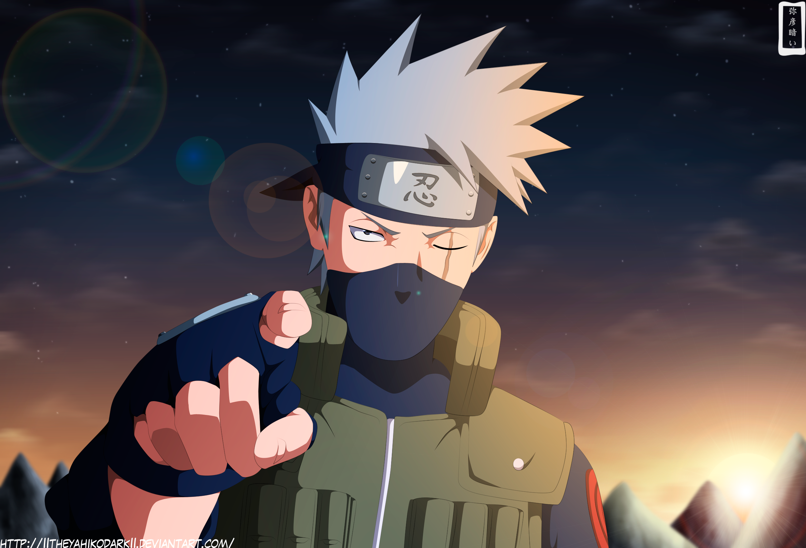
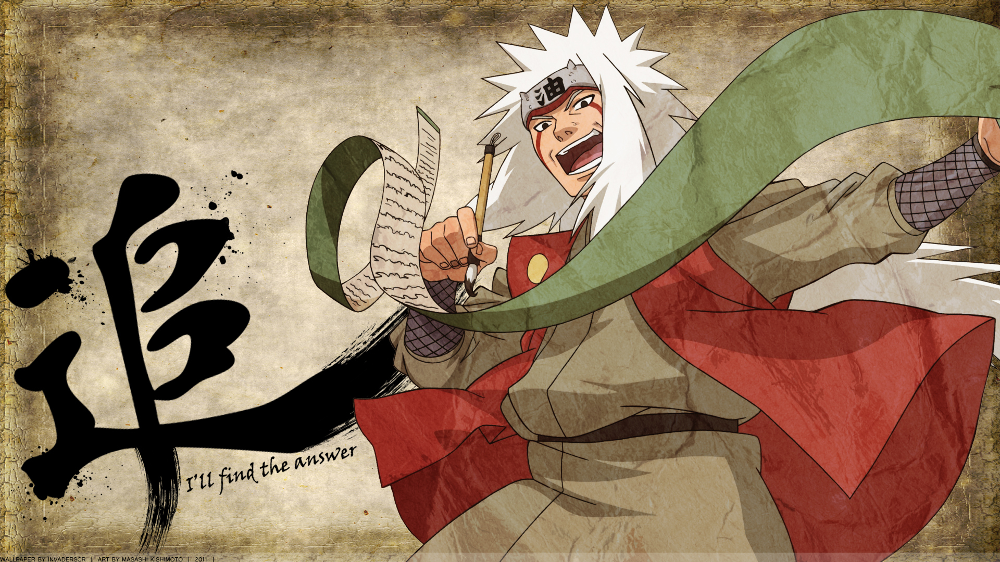
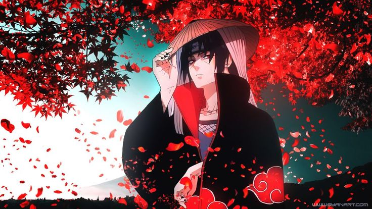
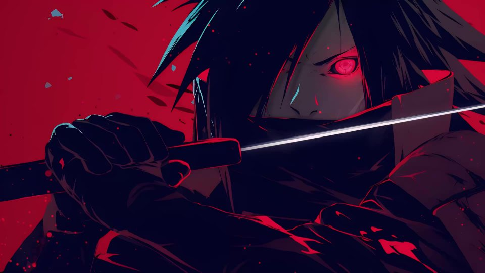

Neden Naruto İzlemeliyim?
Amacım
Bir gün "Sadece bir bölüm bakıp kapatırım" dedim, sonra 700 bölüm sonra ağlarken buldum kendimi... Bu siteyi yapmamın sebebi tam da bu: Naruto’nun seni de içine çekecek kadar güçlü bir hikâyeye sahip olduğunu göstermek. Arkadaşlık, mücadele, ramen sevgisi ve ninja teknikleriyle dolu bir dünyaya hazır ol. “Neden Naruto izlemeliyim?” sorusuna birlikte eğlenceli cevaplar arayalım!
Hikayesi
Naruto animesi hakkında elbet bir şeyler duymuşsunuzdur. Bu kısımda Naruto hakkında bir şeyler duyan ama olay örgüsü hakkında hiçbir bilgisi olmayanlar için ufak bir özet geçeceğiz.Naruto animesi "naruto classic" ve "naruto shippuden" olmak üzere ikiye ayrılır
Naruto Classic
Naruto Uzumaki, köyündeki insanlar tarafından dışlanan, yaramaz ama içten bir çocuktur. Onun bu yalnızlığının sebebi, henüz bir bebekken içine mühürlenen dokuz kuyruklu bir canavarın (Kurama) köy halkında yarattığı korkudur. Ancak Naruto’nun hayali büyüktür: Herkesin saygı duyduğu köy lideri "Hokage" olmak. Bu amacına ulaşmak için zorlu bir ninja eğitimine başlar ve zamanla kendi gücünü ve değerini insanlara kanıtlamaya çalışır.
Hikâye boyunca Naruto, Sasuke ve Sakura adında iki takım arkadaşıyla beraber çeşitli görevlerde yer alır. Bu görevler bir yandan onları olgunlaştırırken bir yandan da ninja dünyasının karanlık yüzünü gözler önüne serer. Naruto, güçlü düşmanlarla savaşırken hem arkadaşlığın hem de azmin ne kadar önemli olduğunu öğrenir. "Naruto", macera ve mizahın iç içe geçtiği, karakter gelişiminin öne çıktığı bir büyüme hikâyesidir.
Naruto shippuden
"Shippuden", Naruto'nun köyden ayrıldıktan sonraki 2,5 yıllık eğitiminin ardından geri dönmesiyle başlar. Artık daha güçlü ve olgun bir gençtir.
Ancak bu kez karşısında sadece bireysel sorunlar değil, tüm ninja dünyasını tehdit eden çok daha büyük tehlikeler vardır.
Naruto’nun en büyük amacı, karanlık yola sapan eski dostu Sasuke’yi geri getirmek ve barışı sağlamaktır.
Bu devam serisi, karakterlerin daha derin yönlerini ve geçmişlerini keşfetmemizi sağlar. Büyük savaşlar, ihanetler, fedakârlıklar ve kimlik arayışlarıyla dolu bir hikâyeye dönüşür.
Naruto’nun “tek başına herkesle başa çıkamam” düşüncesinden “birlikte her şeyi başarabiliriz” anlayışına evrildiği bu yolculuk, izleyiciye güçlü duygularla eşlik eder. "Naruto Shippuden", sadece bir aksiyon animesi değil; aidiyet, umut ve affetme üzerine dokunaklı bir anlatıdır.
Karakterler
Bu kısımda Naruto animesinin belki de en ilgi çekici kısmı olan karakterleri ele alacağız.Naruto animesinde 700 den fazla karakter var biz tabii ki de hepsini değil ama anime için önemli olan 10-15 karakteri inceleyeceğiz.
1-Naruto Uzumaki

Naruto Uzumaki, yapayalnız büyümüş, köyü tarafından dışlanmış ama hiçbir zaman hayallerinden vazgeçmemiş azimli bir ninjadır. İçinde mühürlü olan Dokuz Kuyruklu Canavar yüzünden korkulan biri olarak başlar ama zamanla köyünün en çok saygı duyduğu kişiye dönüşür. Kendine “Hokage olacağım!” diye söz veren Naruto, bu uğurda hem kendini hem çevresini değiştirmeyi başarır. İnatçılığı, iyimserliği ve sınır tanımayan enerjisiyle herkesin kalbine dokunur. Yalnız bir çocuğun bir efsaneye dönüşümünü izlemek seni hem güldürecek hem de duygulandıracak. Naruto sadece bir karakter değil, vazgeçmemenin ta kendisi!
2-Sasuke Uchiha

Sasuke Uchiha, klanının trajik sonuyla karanlığa sürüklenen ve intikam ateşiyle yanan bir ninjadır. Çocuk yaşta ailesini kaybeden Sasuke, gücün peşine düşerek dostlukla ihanet arasında ince bir çizgide yürür. Soğukkanlılığı ve kararlılığıyla dikkat çekerken, geçmişin acıları onu sürekli sınar. Kardeşi Itachi’ye olan nefretiyle başlayan yolculuğu, zamanla kim olduğunu ve neye inandığını sorguladığı derin bir arayışa dönüşür. Onun hikayesi, sadece savaşın değil, affetmenin ve değişimin de hikayesidir. Karanlığın içinden doğan bir ışık gibi, Sasuke’nin yolu hem ürkütücü hem de büyüleyicidir.
3-Sakura Haruno

Sakura Haruno, başlangıçta duygusal yönü baskın olan sakin ve içine kapanık bir ninja olarak karşımıza çıkar. Takım arkadaşlarına olan bağlılığı ve özellikle Sasuke’ye duyduğu hisler, karakterini uzun süre şekillendirir. Zamanla kendini geliştirme çabası gösterse de genellikle olayların merkezinde değil, biraz daha geri planda kalır. Ancak bu sakin ve destekleyici tavrı, takım içindeki dengeyi korumada önemli bir rol oynar.
4-Kakashi Hatake
Kakashi Hatake, yüzünün yarısını gizleyen maskesi ve tek Sharingan gözüyle gizem dolu bir ninja olarak tanınır. Henüz çocuk yaşta elit bir savaşçı olan Kakashi, geçmişinde taşıdığı kayıplarla derin bir yalnızlık ve sorumluluk duygusu geliştirir. "Kopya Ninja" lakabını binlerce jutsuyu ezberlemesiyle kazanmış, stratejik zekâsı ve soğukkanlılığıyla düşmanlarını hep bir adım geride bırakmıştır. Öğrencilerine verdiği değer ve onları koruma çabası, onun aslında sert kabuğunun altında güçlü bir vicdana sahip olduğunu gösterir. Hem gizemli hem de etkileyici bir figür olan Kakashi, sadece bir öğretmen değil; geçmişin yükünü taşıyan bir efsanedir. Onu tanımak, Konohagakure'nin en derin sırlarına göz atmak gibidir.
5-Jiraiya
Kimi zaman bir serseri, kimi zaman ise efsanevi bir bilge... Jiraiya, eğlenceli kişiliğinin ardında derin bir acıyı ve büyük bir bilgeliği gizler. Hem bir savaşçı hem de bir yazar olan bu ninja, kaderin yükünü sırtında taşırken, geleceğe umutla bakan öğrenciler yetiştirmeyi seçmiştir. Onun yolu, eğlenceden ölüme, hafiflikten derinliğe uzanan bir kahramanlık öyküsüdür. Ardında bıraktığı miras, bir ulusun umudunu yeniden yeşertir.
6-İtachi Uchiha
Soğukkanlı bir hain mi, yoksa tarihin en trajik kahramanı mı? Itachi Uchiha, tüm köyün nefretini omuzlayarak kardeşi için karanlığa yürüyen bir gölgedir. Gözlerinin ardında yalnızlık, fedakârlık ve korkunç bir görev saklıdır; onun sessizliği, bir halkı korumak için çığlığa dönüşür. Herkes onu lanetlerken, o sevdikleri için kendini yok eden bir gölge gibi yaşar. Itachi’nin hikayesi, hakikatle yalanın, adaletle ihanetin iç içe geçtiği unutulmaz bir kader yazımıdır.
7-Minato Namikaze
Bir göz açıp kapayıncaya kadar düşman saflarını delen "Sarı Yıldırım", yalnızca hızın değil zekânın da simgesidir. Genç yaşında Hokage olacak kadar sevgi ve saygı kazanan Minato, ailesine olan sevgisiyle ve köyüne olan bağlılığıyla örnek bir liderdir. Savaşın ortasında bile sakin kalabilen bu adam, ardında fedakârlıkla dolu sessiz bir kahramanlık bırakır. Onun hikayesi, hızla gelip geçen ama asla unutulmayan bir yıldız gibidir.
8-Pain
Bir zamanlar barışın hayalini kuran bir çocukken, acının kaçınılmaz gerçekliğine dönüşen bir tanrıya evrildi. Pain, savaşın içindeki kayıplarla şekillenmiş, kendi adaletini kurmak için merhameti terk etmiş bir figürdür. Onun gözlerinde yalnızca geçmişin enkazı değil, insanlığın tekrar eden hataları da saklıdır. Her cümlesi sorgulatan, her adımı sarsıcı olan bu karakter, düşman mı yoksa haklı bir isyan mı, kararı izleyiciye bırakır.
9-Madara Uchiha
Efsanelerin gölgesinde doğmuş, gerçekliğe meydan okuyan bir savaşçı... Madara Uchiha, yalnızca gücüyle değil, idealleriyle de dünyayı sarsan bir figürdür. Barışa olan inancını, dünyayı kendi düzenine göre şekillendirmek için kullanması, onu hem trajik hem tehditkâr bir karakter yapar. Zamanı ve ölümü aşarak geri dönen bu adam, geçmişin hırsını bugünün kaderine dönüştürür. Madara'nın bakışları, sadece bir düşmanı değil, tarihi yargılayan bir hakimi andırır.
10-Shikamaru Nara
Hayat ona “ne sıkıcı…” dedirttiğinde bile, o herkesten üç adım öndeydi. Shikamaru, savaşmaktan hoşlanmayan ama gerektiğinde en tehlikeli savaşları aklıyla kazanan bir dâhidir. Gölgelerle oynayan bu stratejist, zekâsının ardına gizlediği sadakat ve duygusallıkla gerçek bir lider olur. Kaybettiklerinden ders alır, sevdiklerini ise sessizce ama sonuna kadar korur. O, gösterişsizliğin içindeki ihtişamdır — ses etmeden gelen zaferin adı.
Efsanevi Müzikler
Naruto evrenini belki de Naruto evreni yapan en güzel özelliklerden biri kuşkusuz ki müzikleridir. Naruto evrenindeki müzikler, duygusal sahnelerde kalbe dokunan melodileriyle izleyicinin ruhuna işlerken; aksiyon sahnelerinde ise Japon kültüründen beslenen ezgileriyle sahnelere epik bir derinlik katar. Bu müzikler, hikâyenin atmosferini sadece desteklemez, aynı zamanda onu unutulmaz kılar."Haruka Kanata" – Asian Kung-Fu Generation
Naruto’nun ikinci opening’i ve cidden enerjisiyle insanı hemen sarıyor. İlk notaları duyunca “Tamam, macera başlıyor!” diye hissediyorsun.
"Go!!!" – FLOW
Bu dördüncü opening adeta adrenalini yükseltiyor. Dinlerken kendini Naruto ile birlikte savaşta gibi hissediyorsun, motivasyon patlaması!
"Wind" – Akeboshi
İlk ending olarak hem sakin hem hüzünlü bir havaya sahip. Bölümün sonunda dinleyince içini ısıtıyor ve biraz da düşüncelere daldırıyor.
"Blue Bird" – Ikimono Gakari
Shippuden döneminin en sevilen açılışlarından biri. Umarım her zaman özgürce kanat açmak mümkünmüş gibi hissettirir sana da.
"Sadness and Sorrow" – Toshio Masuda
Naruto’nun içinden geçen o melankolik duyguları birebir yansıtan bir tema. Hüzünlü ama bir o kadar da güzel, o anları unutulmaz kılıyor.
"Silhouette" – KANA-BOON
Shippuden’in ilerleyen bölümlerinde gelen bu parça tam gençlik ve mücadele ruhu yansıtıyor. Dinlerken “Hadi, daha iyisi için devam!” dedirtiyor insana.
Unutulmayan Dövüş Sahneleri
Fazla söze gerek yok. Naruto evrenindeki savaşlar, hem duygusal yoğunlukları hem de animasyon kalitesiyle anime dünyasında ikonik hale gelmiştir. Animelerde bir dövüş sahnesi varsa en iyisini naruto yapmıştır şimdi karşınızda naruto evreninin en iyi 5 savaşı...
eminim ki bunları görünce animeye başlamanız an meselesi olacak :)
Naruto VS Sasuke Final Fight
Serinin en duygusal ve uzun süredir beklenen düellosu. Naruto ve Sasuke’nin ideolojik çatışması, dostlukları ve geçmişleri bu savaşta doruğa ulaşıyor. Harika animasyonlar ve müzik eşliğinde çok etkileyici bir final sunuyor.
İtachi VS Sasuke
Kardeşliğin gölgesinde büyüyen nefretin patladığı o an: Sasuke, ailesinin katili sandığı Itachi'yle nihayet yüzleşir. Her darbede yılların öfkesi, her bakışta gizlenen sırlar çarpışır. Ama bu savaşın asıl galibi, dövüş bittiğinde ortaya çıkan acı gerçektir.
Madara VS Guy Sensei
Guy'ın Sekizinci Kapı’yı (Ölüm Kapısı) açarak Madara’ya karşı verdiği mücadele, saf taijutsu ile yapılmış en etkileyici savaşlardan biri. “Gece” teknikleriyle gelen kırmızı ışık efektleri görsel bir şölen sunar.
Kakashi VS Obito
Hem fiziksel hem de zihinsel anlamda işlenmiş derin bir dövüş. Animasyonlar, geçmiş sahneleriyle harmanlanarak duygusal bir bağ kurar. Ninja sanatı açısından da estetik bir dövüş sunar.
Gaara VS Rock Lee
Bu savaş, Naruto evreninde ilk gerçek şok anlarından biriydi. Rock Lee'nin göz alıcı taijutsu becerileri, özellikle ağırlıkları çıkardığı sahne, anime tarihinin ikonik anları arasında yer aldı. Gaara'nın savunulamaz kum kalkanı karşısında Lee'nin inanılmaz hızı ve kararlılığı, savaşın dramatik yapısını güçlendirdi. Aynı zamanda Lee'nin sadece fiziksel güce dayanan bir ninja olarak nasıl çaba gösterdiğini ve ne kadar özverili olduğunu göstermesiyle izleyicilerin kalbinde derin bir yer etti.
Villian'lar
Naruto evrenindeki kötü karakterler, sadece güçleriyle değil, acı dolu geçmişleri ve derin felsefeleriyle izleyiciyi derinden sarsar. Her biri, “gerçek kötülük nedir?” sorusunu sordururken, bazen kahramanlardan bile daha unutulmaz olur. Onları tanıdıkça “Bu adamlar nasıl villain olabilir?” dememek elde değil!
Karşınızda naruto evrenindeki en sevilen Villian'lar...
1- PAİN
Bir zamanlar barışın hayalini kuran bir çocukken, acının kaçınılmaz gerçekliğine dönüşen bir tanrıya evrildi. Pain, savaşın içindeki kayıplarla şekillenmiş, kendi adaletini kurmak için merhameti terk etmiş bir figürdür. Onun gözlerinde yalnızca geçmişin enkazı değil, insanlığın tekrar eden hataları da saklıdır. Her cümlesi sorgulatan, her adımı sarsıcı olan bu karakter, düşman mı yoksa haklı bir isyan mı, kararı izleyiciye bırakır.
2- MADARA UCHİHA
Efsanelerin gölgesinde doğmuş, gerçekliğe meydan okuyan bir savaşçı... Madara Uchiha, yalnızca gücüyle değil, idealleriyle de dünyayı sarsan bir figürdür. Barışa olan inancını, dünyayı kendi düzenine göre şekillendirmek için kullanması, onu hem trajik hem tehditkâr bir karakter yapar. Zamanı ve ölümü aşarak geri dönen bu adam, geçmişin hırsını bugünün kaderine dönüştürür. Madara'nın bakışları, sadece bir düşmanı değil, tarihi yargılayan bir hakimi andırır.
3-OBİTO UCHİHA

Bir zamanlar saf ve yardımsever bir ninja olan Obito, bir trajediyle yıkıldıktan sonra karanlığın en derinlerine sürüklendi. “Kahraman” olma hayali kurarken, bir anda tüm dünyanın karşısında duran bir düşmana dönüştü. Maskesinin ardında gizlediği yüz kadar, kalbindeki acı da derindi. Onun hikâyesi, sevginin ne kadar güçlü bir yıkıma dönüşebileceğini gösteren sarsıcı bir örnektir. Obito’nun idealleriyle, gerçekliği arasındaki savaş; izleyiciyi hem düşündürür hem de duygulandırır. Naruto evreninde bu kadar çelişkili, bu kadar insan bir villain nadiren görülür.
4- OROCHİMARU
Ölümsüzlüğü arayan bir dahi, bilimin ve merakın karanlık yüzü: Orochimaru. Gücün sınırlarını zorlamak için her türlü ahlaki çizgiyi silen bu karakter, korku saldığı kadar da büyüleyicidir. Bir zamanlar Konohagakure'nin efsanevi Sannin'lerinden biri olan Orochimaru, zamanla kendi karanlık yolunu seçti. Bedenden bedene geçerek sonsuz yaşam peşinde koşan bu adam, aynı zamanda Naruto evreninin en tehlikeli ve zeki zihinlerinden biridir. Onun varlığı, sadece fiziksel bir tehdit değil, aynı zamanda ahlaki bir meydan okumadır.
5-ZABUZA MOMOCHİ
Sisler arasında doğan bir ölüm makinesi: Zabuza Momochi. Kirigakure’nin “Sessiz Katil”i olarak tanınan bu acımasız ninja, ilk başta sadece bir suikastçı gibi görünür. Ancak hikâyesi ilerledikçe, içindeki çatışma, vicdan ve kayıp duygusu izleyiciyi derinden etkiler. Özellikle Haku ile olan ilişkisi, Zabuza’nın insanlığını gözler önüne serer. Kötü olmaya zorlanan ama aslında kırık bir ruh taşıyan bu karakter, Naruto’nun ilk büyük villain’ı olarak unutulmaz bir etki bırakır.
6- KABUTO YAKUSHİ
Sinsi bir gülümsemenin ardına saklanan zekâ: Kabuto Yakushi. Başlangıçta önemsiz bir yardımcı gibi görünen Kabuto, zamanla kendi karanlığını yaratan ve büyüten bir tehdide dönüşür. Orochimaru’nun sadık yardımcısı olarak tanıdığımız bu karakter, efendisini aşmak için çıktığı yolda kendi benliğini bile kaybetmiştir. Bilgiye olan takıntısı ve yaptığı korkunç deneyler, onu sıradan bir düşmandan çok daha öteye taşır. Kabuto’nun evrimleşen kimliği, güç ile delilik arasındaki ince çizgiyi ustalıkla sergiler.
7-AKATSUKİ

İşte karşınızda Naruto evreninin en ikonik, en stil sahibi ve en derin örgütü: Akatsuki.
Sıradan bir kötü organizasyonun çok ötesinde olan Akatsuki, her biri farklı trajedilerden doğmuş, geçmişleriyle yüzleşen ve dünyayı kendi yöntemleriyle “düzeltmek” isteyen üyelerden oluşur.
Her biri farklı ideolojilere, güçlere ve karanlık geçmişlere sahip bu karakterler; izleyicide hayranlık, korku ve merak uyandırır.
Kırmızı bulutlu pelerinleriyle ortaya çıktıklarında sahne bir anda ciddileşir, tansiyon yükselir.
Onlar sadece bir düşman değil, Naruto'nun felsefesini şekillendiren derinlikli figürlerdir.
Akatsuki, kötülüğün estetikle birleştiği, anime tarihine kazınmış eşsiz bir fenomendir. Onları tanıdıkça, “Kötüler bu kadar havalı olmamalı!” diyeceksin.
Naruto Dünyası ve Klanlar
Naruto, Masashi Kishimoto tarafından yaratılan, ninja temalı bir manga ve anime serisidir. Serinin evreni, doğaüstü güçlere sahip ninjaların yaşadığı ve çeşitli ülkelerin bulunduğu kurgusal bir dünyadır. Bu dünyada ninjalar genellikle klanlar halinde yaşar; her klan, kendi gelenekleri, teknikleri (jutsu) ve kan bağıyla aktarılan özel yetenekleriyle tanınır.
Naruto Dünyasına Genel Bakış
Naruto evreni beş büyük ninja ülkesinden oluşur:
Ateş Ülkesi (Konoha / Gizli Yaprak Köyü)
Rüzgar Ülkesi (Gizli Kum Köyü)
Su Ülkesi (Gizli Sis Köyü)
Toprak Ülkesi (Gizli Taş Köyü)
Yıldırım Ülkesi (Gizli Bulut Köyü)
Öne Çıkan Klanlar
1-Uchiha Klanı
Özel Güç: Sharingan (göz yeteneği)
Özellikler: Güçlü genjutsu (illüzyon) ve taijutsu (yakın dövüş) yetenekleri
Ünlü Üyeler: Itachi Uchiha, Sasuke Uchiha, Madara Uchiha
2-Hyuuga Klanı
Özel Güç: Byakugan (göz yeteneği)
Özellikler: 360 derece görüş, iç çakra akışını görme; Jūken (yumuşak yumruk) dövüş stili
Ünlü Üyeler: Neji Hyuuga, Hinata Hyuuga
3-Senju Klanı
Özel Güç: Fiziksel dayanıklılık ve çeşitli elementel jutsular
Özellikler: Kurucu klanlardan biri, taijutsu ve ninjutsuda üstünlük
Ünlü Üyeler: Hashirama Senju (1. Hokage), Tobirama Senju (2. Hokage)
4- Nara Klanı
Özel Güç: Gölge Manipülasyonu
Özellikler: Stratejik zeka, takım liderliği
5- Akimichi Klanı
Özel Güç: Beden büyütme teknikleri
Özellikler: Güçlü fiziksel saldırılar, çakra ile beden kontrolü
Ünlü Üyeler: Choji Akimichi
6-Yamanaka Klanı
Özel Güç: Zihin kontrol teknikleri
Özellikler: Düşmanların zihnine girme, iletişim desteği
Ünlü Üyeler: Ino Yamanaka
7-Uzumaki Klanı
Özel Güç: Olağanüstü yaşam gücü ve mühürleme jutsuları
Özellikler: Dayanıklılık, chakra rezervleri
Ünlü Üyeler: Naruto Uzumaki, Kushina Uzumaki
8- Aburame Klanı
Özel Güç: Böcek kontrolü
Özellikler: Çakralarını böceklere verirler, keşif ve saldırı için kullanırlar
Ünlü Üyeler: Shino Aburame